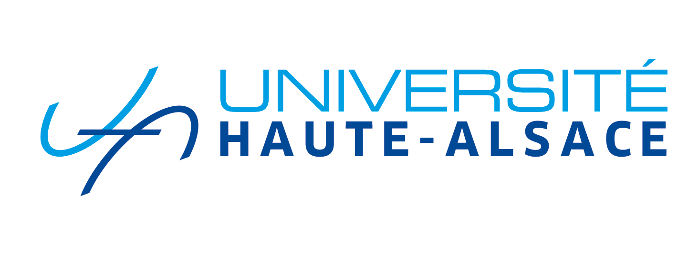
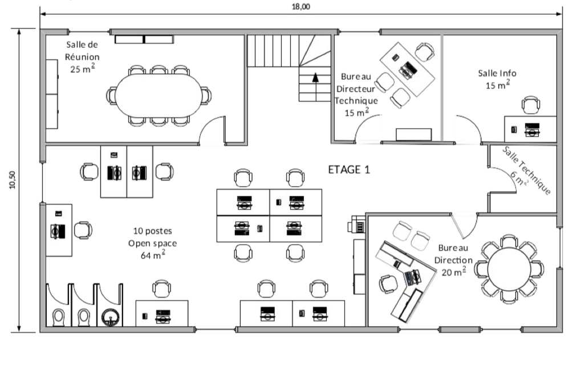
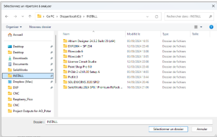
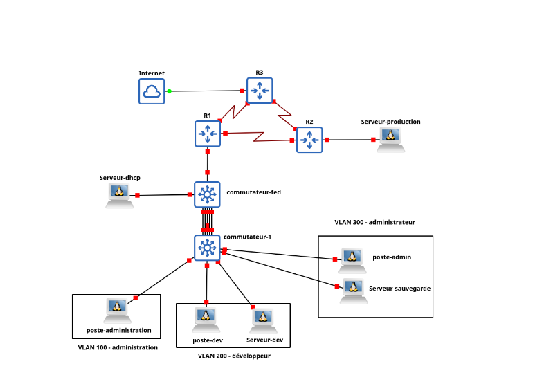
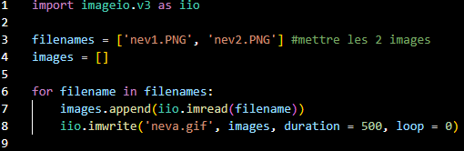
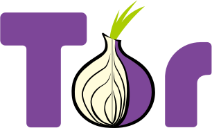
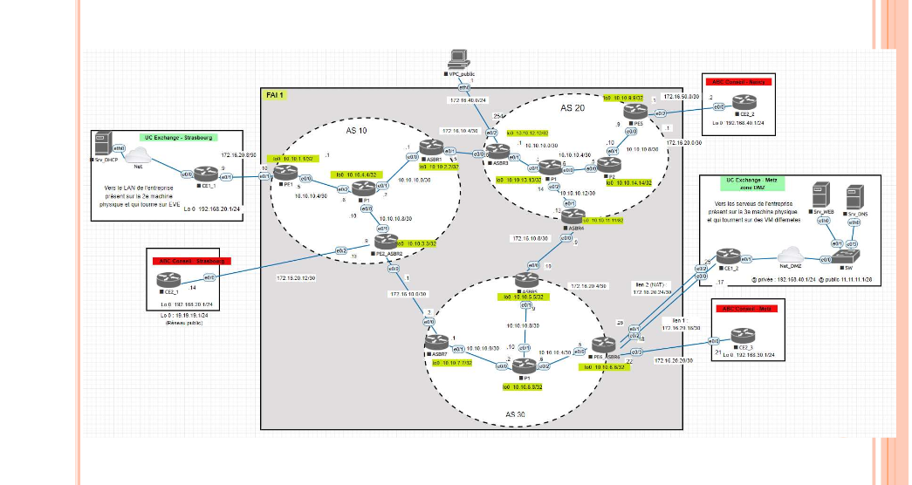
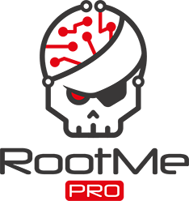

Passionné par les réseaux et la cybersécurité, je suis en 2ᵉ année de BUT RT à l'IUT de Colmar. Mon objectif : intégrer un Master en cybersécurité et construire une carrière solide dans ce domaine.
Me contacter
IUT de Colmar
2024 — 2027Spécialité SIN — Lycée Blaise Pascal, Colmar
2020 — 2023Collège Saint André
2016 — 2020
Faire le réseau LAN d'une entreprise avec Eve-NG.
Voir le projet →
Interface PowerShell pour traiter les données.
Voir le projet →
Construction d'un réseau local.
Voir le projet →Projet Django — développement d'une application Web.
Voir le projet →
D'autres projets + génération de GIF avec Python.
Voir le projet →
Routage Oignon — exploration du réseau Tor.
Voir le projet →
Concevoir un réseau informatique sécurisé multi-sites.
Voir le projet →
Root-Me Pentesting.
Voir le projet →Root-Me Pentesting.
Voir le projet →